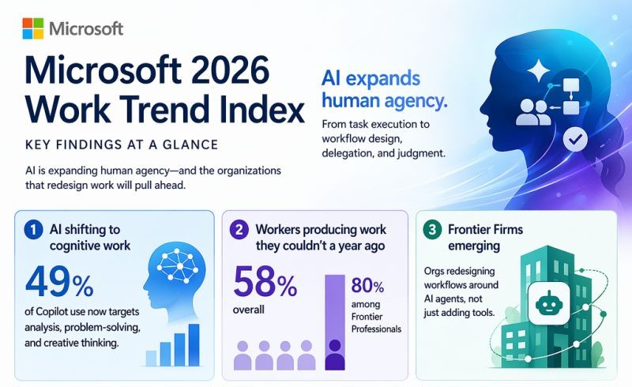
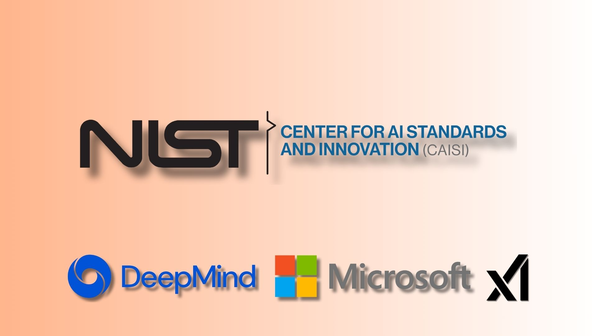
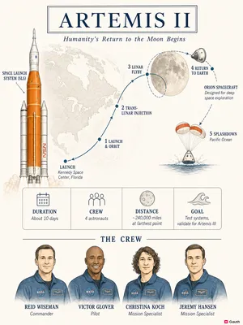
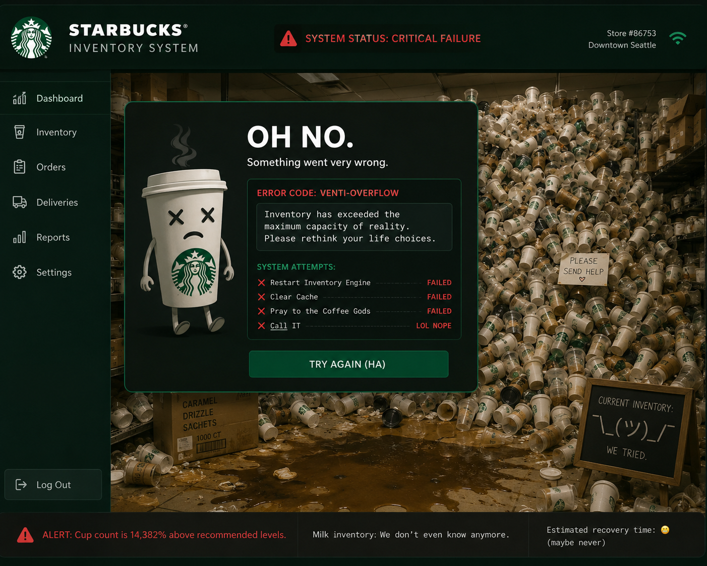

Artificial Insights
In This Issue

Microsoft says the AI gap is now organizational, not individual

Microsoft's 2026 Work Trend Index argues AI has moved into cognitive work like analysis, reasoning, and decision-making, not just admin tasks. Nearly half of Copilot chats fit that category, and 58% of users say they are producing work they could not have done a year ago. The catch is what Microsoft calls the transformation paradox: 65% of workers fear falling behind without AI, but only 13% say they are rewarded for experimenting or redesigning workflows.
CAISI keeps pushing AI evaluation into the national-competition lane

The Center for AI Standards and Innovation is suggesting that model evaluation prior to release needs to be a standard nationwide. CAISI works on testing, security standards, and international AI competition so their voice is a loud one. The government is considering enforcing a model certification prior to release to the public. There is both good and bad associated with doing this. The good is that we could make safety a component that is required for any model to be released. The bad is that it would slow down release of new models, something that we may not want to do given the competition with China in the AI space.
The Vatican is making AI dignity a first-order concern

Pope Leo XIV's first encyclical, Magnifica Humanitas, is expected to focus on human dignity in the age of artificial intelligence. Kind of surprisingly, the launch of this is being done with the partnership of Anthropic co-founder Christopher Olah. It's unclear why the Vatican is stepping up at this point, but with so many people watching, it's an excellent opportunity for everyone to focus on AI ethics for a time. This should be released by the end of May.
AI data centers are becoming a hot national and local politics problem, not just a tech infrastructure story
Bernie Sanders and Alexandria Ocasio-Cortez are pushing for a pause on new AI data center construction until stronger safeguards are in place. At the same time, recent polling shows many Americans oppose data centers being built near them. As you have probably heard, this is something we are dealing with locally as well. The AI boom may feel abstract when it lives in a browser tab, but it feels much less abstract when the conversation turns to how the technology is being built near us. Some of the concerns that opponents cite are water, power rates, noise, tax incentives, and who actually benefits after the ribbon-cutting photo op. The good news is that, if done properly, all of the concerns can be addressed by proper design of a data center and organization of the community.
The data center survey problem is simple: people use AI, but they do not want the machinery next door
Numerous recent surveys provide a little more detail on the conundrum. Americans keep using AI while resisting the infrastructure behind it. That tension is going to keep showing up in local meetings, state policy, and campus conversations. Historically, it's very similar to the discussions surrounding nuclear energy from decades ago. Inevitably, that led to us not using very much nuclear power because we didn't want power plants in our backyards. We have a slightly different situation with AI ... I suspect that the demand for AI will be such that we cannot simply stop using it. We have to get the power from somewhere, and one of the most cost-effective ways to power AI data centers is from nuclear power. Wouldn't it be interesting if AI is what finally gets nuclear power accepted in our communities in the US?

🛠️ Gauth Atlas turns topics into visual learning paths

The News: Gauth Atlas is a web-based AI tool that turns a topic, event, place, person, or story into an interactive visual map. Instead of forcing learners through a long block of text, it organizes material into routes, details, objects, key figures, and layers that users can click through.
My Take: This is super cool. I love this tool. I like how it gives you a structure before it jumps to summarization. I love visuals when I'm learning, and I think a lot of our students are the same. This could be a fun tool for them.
🛠️ Alexa+ can generate podcast-style explainers from a prompt

The News: Amazon's Alexa+ can now create AI-generated podcast-style audio on user-selected topics. The podcast uses two AI-generated co-hosts, and it pulls the information from licensed sources. The podcast feature turns longer answers into conversational audio rather than a short assistant response.
My Take: I like the idea of this, because Alexa is just always there (at least in my house), so I don't need to open a browser to do the searching. To be honest, I've always said that Alexa may be the dumbest AI out there, so if this helps improve Alexa, I'm all for it. So far I've had both successful and unsuccessful attempts to create a podcast. The catch is that it took a long time to create the podcast, and I'm thinking that it might be too long of a wait for most use cases. If generation time does not get better, this feature will feel less like "instant learning" and more like ordering a sandwich from a robot that needs to contemplate bread.

🔬 Microsoft's Work Trend Index: workers are ready, organizations are not

The 2026 Work Trend Index is worth reading as a whole, but five findings stand out:
AI is in cognitive work now. Nearly half (49%) of Microsoft 365 Copilot chats involve analysis, reasoning, and decision-making, not just administrative tasks. 58% of AI users say they are producing work they could not have done a year ago.
The transformation paradox. Workers want to redesign work with AI, but most organizations are not set up to support it. 65% of AI users fear falling behind without adoption; only 13% say they are rewarded for experimenting or redesigning workflows.
Culture beats individual effort. Microsoft puts AI success at 67% organizational (culture, manager support, talent practices) and only 32% individual mindset and behavior. Manager modeling, quality standards, and psychological safety around experimentation matter more than another prompt tutorial.
Human judgment matters more, not less. As agents handle more execution, people need to set direction, evaluate outputs, and own outcomes. 86% of AI users treat AI output as a starting point, not a final answer.
Owned Intelligence is the new edge. Leading organizations, what Microsoft calls Frontier Firms, are building institutional know-how that compounds over time and cannot be easily copied. That requires coordinated reinvention across employees, leaders, IT, and security, not everyone opening a blank chat and hoping for the best.

🎓 AI use is becoming a learning-design problem, not just an access problem

The student challenge is more and more clear every day. Heavy reliance on generative AI weakens critical thinking, writing development, and long-term retention when students use it as a substitute for effort rather than a partner in thinking. To combat this, I'm hearing a lot of discussion regarding a return to a pre-technology clssroom. As you would suspect, I don't love the idea "ban AI and pretend it is 2000 again." A clever balancing act is a better choice, given that the professional world is going to require AI literacy. We need to design assignments differently, with guidance, reflection, and explain-your-reasoning steps built in. Hopefully reaching students on this will be a matter of honest conversation rather than citing rules or policies. Many of our students are thoughtful, deliberate users of technology. Hopefully that will make these discussions easier than the headlines suggest.

🎬 Try Nano Banana 2: Gemini's new image engine is worth five minutes this week
Google just rolled out Nano Banana 2, and the improvement in the ability to create images with correct text is impressive.
So what is it excellent at? The short answer is structured visual work where other image models are inconsistent. Google is leaning hard into real-world knowledge, which means infographics, lecture diagrams, notes turned into visuals, and data visualizations that look like they belong in a handout. It also handles legible text inside images better than most generators I have tested. I use it for signage, event posters, slides, and even translating text already baked into an existing image. If you need subject consistency across multiple images (same character, same object, same vibe), it can hold that together as well.
Give it five minutes this week: open Gemini, choose Create images, and try one real task, like a poster, a diagram, or a slide hero image for something you actually need. See whether the text renders cleanly on the first pass. The below image was created from a one-sentence prompt where I did not provide any of the details except for the date and company.


💥 Starbucks scrapped its AI inventory tool: good idea, rough execution

Starbucks ended its Automated Counting AI program this week and sent milk and beverage ingredient counts back to manual tracking, the same way other inventory is handled in stores. The tool had rolled out fast across North America last September as part of a push to fix product shortages that were hurting sales.
The concept sounded reasonable: use LIDAR and camera data on a tablet to scan shelves of syrups, milks, and other ingredients instead of having baristas count everything by hand. In practice, the system frequently miscounted or mislabeled items, confusing similar milk types, missing products entirely, and creating more frustration than it removed.
This is a great example of rolling out an AI tool without the right planning. These problems are ones that should easily have been foreseen. Just because you can use AI for something does not mean that you should.

Build a ChatGPT Skill that drafts short PowerPoint presentations
This week's theme is moving past the blank chat window, and ChatGPT's Skill Builder is one of the clearest examples of that shift. Instead of pasting the same deck-building instructions into a blank chat every time, you define the workflow once and ChatGPT runs it the same way whenever you need it.
Your assignment: use the Skill Builder in ChatGPT to create a skill called something like Short Deck Builder. The skill should ask you for the presentation details up front, then return a structured slide outline you can paste into PowerPoint.
How to do it:
1. Open ChatGPT and start a new chat. 2. Type Build me a skill... and describe what you want (use the prompt below as your starting point). 3. ChatGPT will draft the skill, ask a few follow-up questions, and offer to install it. Review the draft, tweak anything that feels off, and click Install. 4. Start a fresh chat, slash "/" + mention your new skill (or let ChatGPT pick it up automatically), and run it with a real topic you need this week.
See the demo GIF below for a walkthrough.

The Prompt:
"Build me a skill that creates short PowerPoint presentation outlines for teaching a topic that I specify.
Before drafting slides, ask me to provide: - Topic and purpose - Audience (students, faculty, staff, committee, etc.) - Number of slides (default 4-6) - Tone (formal, conversational, instructional, etc.) - 3-5 key points to cover - Whether I want speaker notes
For each slide, output the slide number and title, on-slide bullet points (short and scannable), and speaker notes if requested. Structure every deck as: title slide, context slide, main content slides, summary slide, and optional next-steps slide.
"
Why it works: Skills store your workflow (required inputs, output format, quality checks), so ChatGPT stops guessing what you want every time. You specify the deck details once per presentation; the skill handles the structure. That is exactly the reusable workflow design this issue has been talking about. I have about 15 skills that I use and re-use each week.
practical next steps for moving past blank-box AI
- Identify one recurring task where you keep rebuilding the same context in a blank chat.
- Build a ChatGPT Skill for that task. Start with the Short Deck Builder from Try This if you want an easy first example.
- Write down the reusable inputs, standards, constraints, and review criteria the skill should enforce before you install it.